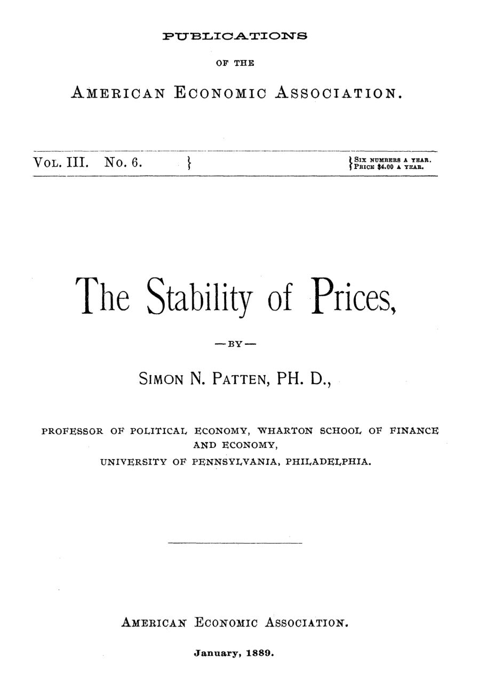

Por que os preços deixaram de ficar parados
Leitura: 8 min
Em 1889, Simon Patten explicou por que os preços passaram a oscilar todo dia, atacou a teoria da renda de Ricardo e propôs que o excedente do progresso fosse tributado para pagar escolas, parques e saneamento.


O comerciante americano de 1889 precisava consultar o jornal todos os dias antes de saber onde comprar seu estoque. O consumidor também vivia de guarda: sem atenção, pagava caro demais pelo açúcar ou pela farinha. Até roupas, no varejo, mudavam de preço tão depressa que ler anúncios virara obrigação. Na geração anterior, lembra Simon N. Patten, os artigos de consumo comum tinham preços fixos que às vezes duravam uma vida inteira, e o comerciante que cobrasse acima do costume provocava a indignação da comunidade.
A resposta habitual dos economistas era a superprodução. Patten, professor da Wharton School, na Universidade da Pensilvânia, perguntou por que estaríamos mais sujeitos a ela do que nossos avós. Seu ensaio de 60 páginas busca a resposta na mudança das condições físicas e sociais da produção.
Por que o preço do trigo era estável e deixou de ser?
O ponto de partida é a teoria da renda de David Ricardo. Renda da terra, nesse vocabulário, é o que o dono recebe acima do que paga em salários e lucros, graças à fertilidade ou à localização do solo. A margem de cultivo é a pior terra que ainda compensa plantar ao preço corrente. Quando há muitas terras de qualidades diferentes, cada queda de preço tira da produção um lote inteiro, a oferta encolhe e o preço volta. A diversidade de custos funciona como amortecedor.
O mesmo vale para a indústria. No século anterior, os centros produtores eram pequenos e isolados, cada um com custo diferente, e nenhum abastecia sozinho o mercado. Na produção em larga escala, uma diferença mínima de custo basta para eliminar o concorrente, e os centros mais eficientes podem fornecer mais do que o mundo precisa. Antes, as crises atingiam primeiro os menos eficientes e paravam ali.
“O sofrimento de poucos protegia muitos.” (“the suffering of the few protected the many”)
Com produtores igualmente eficientes, ninguém absorve o choque primeiro: todos sofrem ao mesmo tempo. Qualquer acontecimento, por menor que seja, pode então lançar o país inteiro em dificuldade: uma mudança no clima, um ato do Congresso, uma guerra de tarifas entre ferrovias, a quebra de um banco.
Quem fica com a sobra quando a natureza não decide?
Quando os preços eram estáveis, sabia-se quem levava cada parte: salários e lucros mínimos, e o restante ia como renda aos proprietários. Sem terra na margem de cultivo, surge uma sobra sem dono natural, que Patten chama de excedente: a diferença entre o que se produz e a renda garantida de cada classe. Quem a captura passa a ser questão de poder.
Daí o ataque a Ricardo. A terra sem renda, aquela que só remunera o trabalho e o capital nela empregados, quase não existe na vida real, sustenta Patten. Terra ruim para trigo serve para outra coisa. As encostas do Reno, íngremes demais para a lavoura comum, valem mais que as planícies vizinhas porque dão uva. Os donos das planícies férteis de Illinois compram batata das colinas de Wisconsin. Em Illinois, o trigo deu lugar ao milho e passou a ser importado. A conclusão é seca: a natureza tende a melhorar a terra; é o homem que a mantém pobre.
Que lei decide a divisão do bolo?
Patten propõe uma “lei geral da distribuição”. Entre terra, trabalho e capital, o fator que cresce mais devagar reduz os demais ao mínimo, fica com todos os ganhos das melhorias e carrega todos os encargos permanentes, como os impostos. Um avanço técnico barateia a comida por um tempo; a população cresce, o preço volta a subir e o ganho final escorre para o dono do fator escasso. Máquinas, escreve ele, melhoram muito mais depressa do que homens.
O resultado é uma divisão em duas partes. A renda segura de cada classe é fixada por causas lentas, como o padrão de vida dos trabalhadores. O excedente é disputado mês a mês. Patten o compara a um rio no delta, que qualquer obstáculo desvia. A prosperidade de um país, diz, depende de produção regular, preços estáveis e distribuição uniforme, não do volume total.
Os trustes seriam um passo para preços estáveis?
A primeira resposta social à perda da proteção natural foi a era do vendedor. Antes, o comprador procurava o vendedor e um centavo de diferença decidia a venda. Agora, o vendedor procura o comprador. Em grandes empresas, para cada homem dirigindo a produção, havia meia dúzia comprando e vendendo, e com salários maiores. Nem o sal se vendia sem anúncio.
“Agora, a importância do vendedor é suprema.” (“Now the importance of the salesman is supreme.”)
É uma estabilidade fundada no desperdício: o excedente vira custo de venda e o povo fica quase como se a produção não tivesse melhorado. A segunda etapa seriam os trustes, grandes combinações de empresas para fixar preços e controlar a oferta. Sem limites naturais, a concorrência derruba preços abaixo do custo até que os rivais queimem seu capital. Os trustes põem um piso, e o sucesso os leva a subir até o ponto em que o consumo começa a cair.
“Preços estáveis, convém lembrar, significam preços altos.” (“Stable prices, it is well to keep in mind, mean high prices”)
Patten admite os males: direitos de inocentes violados e riqueza concentrada em poucas mãos. Ainda assim, prefere que o excedente vá a acionistas em vez de proprietários de terra. Se o preço da terra subisse a 500 dólares o acre, o público veria nisso prosperidade; se um quarto disso fosse parar em trustes, o país inteiro se agitaria até achar solução. A antipatia pelos trustes seria, paradoxalmente, um motor de reforma.
A terceira etapa seria a tributação do excedente. Impostos, escreve, podem estabilizar preços tão bem quanto qualquer monopólio, e não devem ficar no mínimo que a visão do laissez-faire admitiria. Ele lista os destinos: instrução pública, parques, diversões baratas e edificantes, boas estradas no campo, drenagem e saneamento nas cidades. Cortar tributos antigos, adverte, só entregaria o ganho a quem já captura os frutos do progresso.
Na minha leitura
Na minha leitura, o ensaio vale menos pelas conclusões do que pelo mecanismo que identifica. Patten percebeu que a estabilidade de preços não é um dado da natureza, mas o efeito de uma estrutura de custos dispersa. Quando a tecnologia e o transporte igualam os produtores, os choques deixam de ter um ponto de absorção e se espalham. A intuição reaparece sempre que mercados integrados e eficientes se mostram também mais voláteis.
A defesa dos trustes envelheceu mal, e o próprio autor reconhece seus custos. Mas a pergunta central permanece legítima: quando o progresso gera uma sobra que nenhuma regra distribui, quem deve ficar com ela? Patten responde que, na falta de um critério natural, prevalece o mais forte, e que cabe ao Estado decidir se essa sobra financia bens públicos ou fica com quem consegue montar a melhor combinação. É uma escolha de política fiscal, não uma fatalidade.
Glossário
- Renda da terra
- Pagamento ao dono do solo acima do que remunera o trabalho e o capital, devido à fertilidade ou à localização.
- Margem de cultivo
- A pior terra que ainda compensa cultivar ao preço vigente; na teoria de Ricardo, ela mede a renda das terras melhores.
- Terra sem renda
- Terra que só cobre os custos de trabalho e capital, sem sobra para o dono; Patten nega que exista na prática.
- Excedente
- Parte da produção que excede a renda garantida de cada classe e não tem dono definido por leis naturais.
- Truste
- Combinação de empresas de um setor para limitar a concorrência e fixar preços.
Fontes
- The Stability of Prices (pp. 5–64). JSTOR · Internet Archive (PDF)
- Sumário da edição no JSTOR: Publications of the American Economic Association, vol. 3, nº 6.
Documento em domínio público (EUA, publicado antes de 1931), via JSTOR Early Journal Content e Internet Archive. Resumo e comentário do autor deste site, sem afiliação com a American Economic Association. Encontrou um erro? Escreva: a correção é publicada no próprio texto, com data.
← Nº 15 · Medir em vez de descrever: Mayo Smith e a estatística como ciência Nº 17 · Quem fixa o salário? Duas tentativas de achar a lei, em 1888 →